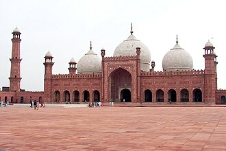

Gambaran
La mosquée Badshahi ou mosquée Royale, ou bien encore surnommée La mosquée de l'Empereur, se trouve à Lahore. C'est l'un des plus fameux monuments religieux et historiques de Lahore et également une attraction majeure des touristes, en mettant en action l'architecture, l'histoire et la passion de l'Empire moghol.
مسجد بادشاهي هو مسجد جامع يقع في لاهور بالباكستان. بناه السلطان المغولي السادس أورنكزيب. شيد بين 1671 و 1673، وكان أكبر مسجد في العالم عند البناء. وهو ثاني أكبر مسجد في باكستان وخامس أكبر مسجد في العالم حالياً. ومن معالم لاهور الأكثر شهرة ونقطة جذب سياحية رئيسية. وهو من أهم مساجد في باكستان ومنطقة جنوب آسيا.
The Badshahi Mosque is a Mughal-era imperial mosque located in Lahore, Punjab, Pakistan. It was constructed between 1671 and 1673 by the Mughal emperor Aurangzeb, opposite to the Lahore Fort in the northern outskirts of the historic Walled City. It is widely considered to be an iconic landmark of the country.
Badşahi Camii, Pakistan'ın Lahor kentinde bulunan bir camidir. Cami, 17. yüzyılda Babür İmparatorluğu döneminde inşa edilmiş olup Lahor Kalesi'nin batısında, Lahor Surları'nın eteklerinde yer alır ve kentin en önemli yerlerinden biri olarak kabul edilir.
Masjid Badshahi, atau 'Masjid Kaisar', Dibangun oleh raja ke enam Kesultanan Mughal, Raja Aurangzeb tahun 1671 dan selesai dibangun pada tahun 1673 di Lahore, Pakistan. Masjid Badshahi merupakan masjid dan sebagai landmark serta tujuan wisata utama kota Lahore.
بادشاہی مسجد 1673 میں اورنگزیب عالمگیر نے لاہور میں بنوائی۔ یہ عظیم الشان مسجد مغلوں کے دور کی ایک شاندار مثال ہے اور لاہور شہر کی شناخت بن چکی ہے۔ یہ فیصل مسجد اسلام آباد کے بعد پورے پاکستان کی دوسری بڑی مسجد ہے، جس میں بیک وقت 60 ہزار لوگ نماز ادا کرسکتے ہیں۔ اس مسجد کا انداز تعمیر جامع مسجد دلی سے بہت ملتا جلتا ہے جو اورنگزیب کے والد شاہجہان نے 1648 میں تعمیر کروائی تھی۔
Die Badshahi-Moschee in Lahore ist die zweitgrößte Moschee Pakistans und eine der größten Moscheen der Welt. In den Jahren 1671 bis 1674 auf Anordnung von Großmogul Aurangzeb erbaut, gilt sie als eines der bedeutendsten Werke der indo-islamischen Sakralarchitektur der Mogulzeit.
La mezquita Badshahi fue construida en 1673 por el emperador mogol Aurangzeb en Lahore (Pakistán). Es uno de los atractivos turísticos más importantes de la ciudad, junto con la tumba de Jahangir, nieto de Aurangzeb, siendo ambos complejos ejemplos de la arquitectura mogol.
La Moschea Imperiale a Lahore, commissionata dal sesto imperatore Moghul Aurangzeb nel 1671 e completata nel 1673, è la seconda moschea per ordine di grandezza in Pakistan e in tutta l'Asia meridionale e quinta per grandezza al mondo.
De Badshahimoskee of Keizersmoskee werd gebouwd in 1673 door de Mogolkeizer Aurangzeb in Lahore, Pakistan. De Badshahimoskee is de op vier na grootste moskee in de wereld, en de op een na grootste van Pakistan en Zuid-Azië. Het is een belangrijke toeristische attractie.
巴德夏希清真寺，又译为皇帝清真寺、皇家清真寺，巴基斯坦的清真寺，位于拉合尔，是一座莫卧儿帝国时代的贾玛清真寺，为莫卧儿皇帝奥朗则布时期兴建，竣工于1673年。坐落于拉合尔堡西侧，正对拉合尔堡的阿拉姆吉尔门，是拉合尔乃至巴基斯坦的地标建筑。
バードシャーヒー・モスク は、ムガル帝国の第6代君主アウラングゼーブの命によってラホールに建設されたモスク。1671年から1673年にかけて建設された同モスクは、完成時には世界最大のモスクであった。現在は、パキスタンで2番目、世界で5番目に広いモスクである。同モスクはラホールを象徴するもっとも有名なランドマークであり、主要な観光地である。アウラングゼーブによる建築プランは、彼の父シャー・ジャハーンがデリーに建てたジャーマー・マスジドに似ているが、バードシャーヒー・モスクの方がはるかに大きい。同モスクは、野外モスク (イードガー) として機能している。27万6,000平方フィート (約2万5,641平方メートル) の中庭は10万人の礼拝者を、屋内には1万人の礼拝者を、それぞれ収容可能。ミナレットは高さ60メートル (196フィート)。同モスクは、もっとも有名なムガル様式の建造物の一つであるが、シク王国のランジート・シングの統治期 においては不遇を託った。
바드샤히 모스크(우르두어: بادشاہی مسجد→황제 모스크)는 무굴 제국의 제6대 군주 아우랑제브의 지시에 따라 파키스탄 라호르에 건설된 모스크이다. 1671년부터 1673년에 걸쳐 건설된 이 모스크는 완성 당시에는 세계 최대의 모스크였다. 현재는 파키스탄에서 두 번째, 세계에서 다섯 번째로 큰 모스크이다. 이 모스크는 라호르를 상징하는 가장 유명한 랜드마크이자 주요 관광지이다. 아우랑제브에 의한 건축 계획은 그의 아버지 샤 자한이 델리에 세운 자마 마스지드와 비슷하지만, 바드샤히 모스크가 훨씬 크다. 이 모스크는 야외 모스크 이드가로서의 기능을 담당하고 있다. 27만 6,000 평방 피트 의 정원은 10만 명의 예배자를, 실내에는 1만 명의 예배자를 각각 수용이 가능하다. 미나레트의 높이는 60 미터(196 피트)이다. 이 모스크는 가장 유명한 무굴 양식의 건축물 중 하나이다.
बादशाही मस्जिद पाकिस्तान के लाहौर में स्थित है। इस मस्जिद को 1673 ई॰ में मुगल सम्राट औरंगजेब ने बनवाया था। यह मस्जिद मुगल काल की सौंदर्य और भव्यता का प्रत्यक्ष प्रमाण है। पाकिस्तान की इस दूसरी सबसे बड़ी मस्जिद में एक साथ 55000 हजार लोग नमाज अदा कर सकते हैं। बादशाही मस्जिद का डिजाइन दिल्ली की जामा मस्जिद से काफी मिलता-जुलता है, जिसे 1648 में औरंगजेब के पिता शाहजहां ने बनवाया था। मस्जिद लाहौर किले के नजदीक स्थित है। हाल में मस्जिद परिसर में एक छोटा संग्रहालय भी जोड़ा गया है।
Мече́ть Бадша́хи — вторая по величине мечеть Пакистана, расположенная в городе Лахор. Мечеть считается одним из наиболее значимых памятников индо-исламской сакральной архитектуры эпохи Великих Моголов. Вторая по величине мечеть Пакистана после мечети Фейсал в Исламабаде.
Nhà thờ Hồi giáo Badshahi là một kỷ nguyên Mughal nhà thờ Hồi giáo ở Lahore, thủ phủ của Pakistan tỉnh Punjab, Pakistan. Nhà thờ Hồi giáo này nằm ở phía tây của Pháo đài Lahore dọc theo vùng ngoại ô của Thành phố tường bao Lahore, và được coi là một trong những địa danh mang tính biểu tượng nhất của thành phố Lahore.
มัสยิดบาดชาฮี เป็นมัสยิดใหญ่นิกายซุนนี สร้างขึ้นในสมัยโมกุล ตั้งอยู่ที่ลาฮอร์ แคว้นปัญจาบ ประเทศปากีสถาน ตั้งอยู่ทางตะวันตกของป้อมลาฮอร์ และได้รับการยอมรับว่าเป็นหนึ่งในจุดสนใจที่โดดเด่นแลมีชื่อเสียงที่สุดของลาฮอร์ มีการบูรณะใหญ่นับตั้งแต่ปี 1939 เป็นต้นมาภายใต้การระดมทุนโดยสีกันทร ฮายัต ข่าน และภายใต้การดูแลของสถาปนิก นาวับ อาลัม ยัร ยุง บะฮาดูร เนื่องจากข่านมีส่วนอย่างมากในกาทำนุบำรุงมัสยิดครั้งใหญ่นี้ ร่างของเขาเมื่อเสียชีวิตได้นำไปฝังอยู่เยื้องกับมัสยิดบาดชาฮีที่ฮะญูรีบาฆ
Badshahimoskén är en moské, i Lahore, Pakistan. Den är en av världens största moskéer, och uppfördes 1673 av den indiske stormogulen Aurangzeb. Sedan 14 december 1993 är moskén uppsatt på Pakistans tentativa världsarvslista.
Moscheea Badshahi este o moschee din orașul Lahore, Pakistan. Aceasta este cea mai mare moschee din oraș și a doua cea mai mare din țară, după Moscheea Faisal din Islamabad.
Kisah dan riwayat
Fakta sejarahMasjid Kaisar Aurangzeb
Masjid Badshahi, “masjid sang kaisar”, dibangun di Lahore antara tahun 1671 dan 1673 atas perintah Kaisar Mughal Aurangzeb. Dibangun dari batu pasir merah dan marmer putih, berhadapan dengan Benteng Lahore, masjid ini lama menjadi salah satu masjid terbesar di dunia, dengan halaman yang sangat luas. Sebuah ruangan kecil di dalamnya menyimpan relikui yang dinisbatkan kepada Nabi ﷺ dan keluarganya; keasliannya tidak terbukti. Di dekatnya, di pintu masuk, dimakamkan penyair Muhammad Iqbal, dalam sebuah mausoleum kecil.
Sumber: Wikipedia : Badshahi Mosque
Fakta sejarahKandang kuda, barak, lalu masjid kembali
Pada tahun 1799, pasukan Sikh Ranjit Singh merebut Lahore. Halaman besar masjid dijadikan kandang kuda pasukan, dan 80 kamar belajar kecil diubah menjadi tempat tinggal prajurit dan gudang amunisi. Setelah kedatangan Inggris, masjid ini mula-mula tetap menjadi barak. Masjid ini baru dikembalikan kepada umat Islam pada tahun 1856. Pemugaran besar yang dimulai pada tahun 1939 mengembalikan keindahannya.
Sumber: Wikipedia : Badshahi Mosque
Di peta
Dokumen dan tautan
- Wikipédia — Français
- Wikipédia — العربية
- Wikipédia — English
- Wikipédia — Türkçe
- Wikipédia — Bahasa Indonesia
- Wikipédia — اردو
- Wikipédia — Deutsch
- Wikipédia — Español
- Wikipédia — Italiano
- Wikipédia — Nederlands
- Wikipédia — 中文
- Wikipédia — 日本語
- Wikipédia — 한국어
- Wikipédia — हिन्दी
- Wikipédia — Русский
- Wikipédia — Tiếng Việt
- Wikipédia — ไทย
- Wikipédia — Svenska
- Wikipédia — Română
- Wikidata — Q330872
Data: Wikidata (CC0), diperbarui setiap 3 bulan. Tahun yang dicantumkan adalah tanggal pembangunan tertua yang diketahui dari bangunan tersebut: untuk bangunan yang kemudian menjadi masjid (seperti Hagia Sophia), tahun itu adalah tahun bangunan aslinya. Foto: Wikimedia Commons, pembuat dan lisensi ada di halaman setiap foto.